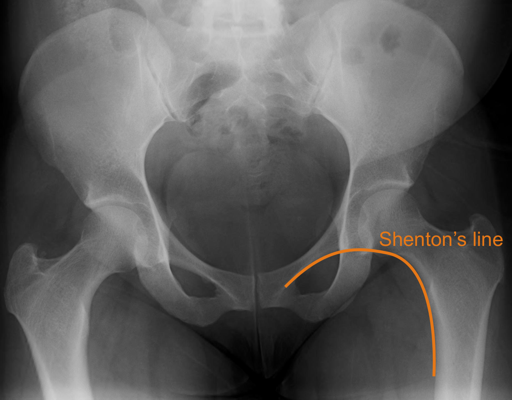

Imaging
Radiographs
- AP pelvis: Note the relative sizes of the femoral heads - a posterior dislocation is implied by a smaller head
- Shenton's line should be smooth and continuous
- Line drawn along inferior border of superior pubic ramus and along the inferomedial border of the ipsilateral
femoral neck
- Greater profile of the lesser trochanter implies ER
- Note any associated fractures, particularly of the femoral neck, head and acetabulum

Normal AP pelvis
- Cross-table lateral of the hip: distinguish between anterior and posterior dislocations
 Normal cross-table lateral hip
Normal cross-table lateral hip
- Judet views: use to evaluate acetabular injury
- Post-reduction films should demonstrate uniform and symmetric joint spaces
- CT: can be used to evaluate for incarcerated osteochondral fragments, acetabular fractures and femoral head
fractures